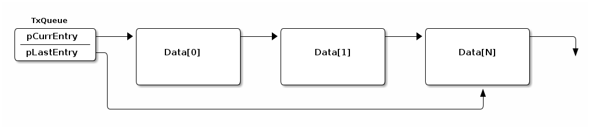
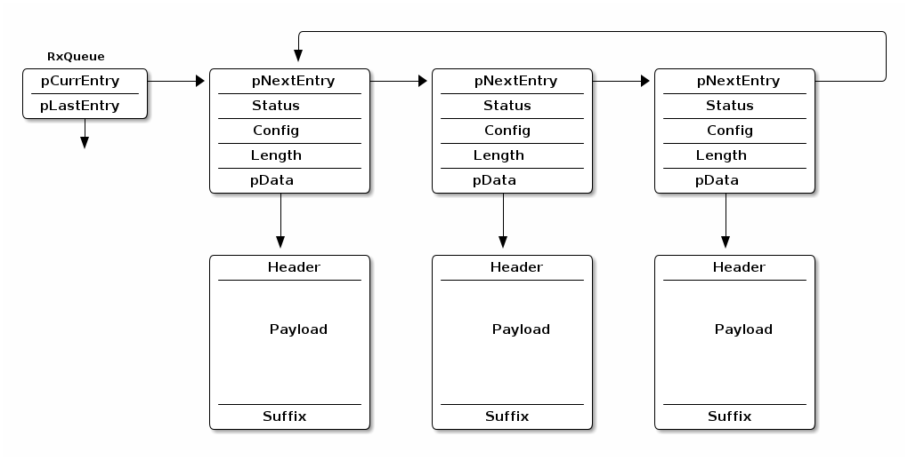

Link Layer (LL)¶
The link layer is the interface to the physical layer (PHY) and it controls the RF state of the device. In Bluetooth Low Energy, there are 5 states a device can be in:
- Standby
- Advertising
- Scanning
- Initiating
- Connected
Since the LL controls the RF state of the device, it is also responsible for the scheduling (anchor point), physical channel to be on and length of the packets.
In the TI BLE-Stack, there are two options for LL scheduler to form anchor points.
- The anchor points are formed randomly with no restriction on timing. This is the case for all of the out of box examples.
- The anchor points are formed with 5 ms guard time. This is achieved when you set
BLE_MASTER_BEHAVIOR = BLE_MASTER_CONNECTION_ALIGNEDinble_user_config.hfile in app project.
Note
The TI BLE-Stack does not move the anchor points after connection parameter updates when using the same set of connection parameters.
Unlimited Scan¶
In the TI BLE-Stack, we have enabled the users to use unlimited scan feature.
When enabling unlimited scan feature, the stack will pass the scan result to
the application whenever a broadcaster/advertiser device is found. The
BLE-Stack will not save the result in the stack and thus further save RAM usage.
The application layer will then receive the scan result one by one under
GAP_DEVICE_INFO_EVENT state.
Once the scan duration ends, the GAP_DEVICE_DISCOVERY_EVENT will still be
sent from the stack, but there will not be any scan results reported back to
the application layer at this point.
The example code for using unlimited scan feature can be found in
simple_central, simple_observer and multi_role applications. All the needed
changes are wrapped under if ENABLE_UNLIMITED_SCAN_RES statement. Therefore,
if you are using the aforementioned examples, all you need to do is to change
ENABLE_UNLIMITED_SCAN_RES from FALSE to TRUE.
This feature is set by changing the GAPCENTRALROLE_MAX_SCAN_RES parameter.
| Value | Description |
|---|---|
| 0 | Enable unlimited scan. Scan results are only available under GAP_DEVICE_INFO_EVENT |
| 1~256 | Maximum number of scan reports to storer. Scan resulst are available under both GAP_DEVICE_INFO_EVENT and GAP_DEVICE_DISCOVERY_EVENT |
The steps for enabling unlimited scan for custom application are described below:
Under CustomApp_init function, add the following code
uint8_t scanRes = 0;
GAPCentralRole_SetParameter(GAPCENTRALROLE_MAX_SCAN_RES, sizeof(uint8_t),
&scanRes);
In CustomApp_processRoleEvent, you need to extract the scan result under case
GAP_DEVICE_INFO_EVENT.
// Scan result list
// Maximum number of scan responses
#define DEFAULT_MAX_SCAN_RES 8
static gapDevRec_t devList[DEFAULT_MAX_SCAN_RES];
static uint8_t scanRes = 0;
static void CustomApp_processRoleEvent(gapCentralRoleEvent_t *pEvent)
{
switch (pEvent->gap.opcode)
{
case GAP_DEVICE_INIT_DONE_EVENT:
{
// ...
}
break;
case GAP_DEVICE_INFO_EVENT:
{
// Add the scan result to a list.
uint8_t i;
// If result count not at max
if (scanRes < DEFAULT_MAX_SCAN_RES)
{
// Check if device is already in scan results
for (i = 0; i < scanRes; i++)
{
if (memcmp(pEvent->deviceInfo.addr, devList[i].addr , B_ADDR_LEN) == 0)
{
return;
}
}
// Add addr to scan result list
memcpy(devList[scanRes].addr, pEvent->deviceInfo.addr, B_ADDR_LEN);
devList[scanRes].addrType = pEvent->deviceInfo.addrType;
// Increment scan result count
scanRes++;
}
}
break;
// ....
}
Note
Application memory constraints still apply and will limit the number of scan results that can be received and how many that can be displayed. As an example, let’s take simple_central. This example uses a two button menu to let you navigate through menus and choices. Since simple_central will per default display all scan results in the menu after the scan has ended, the max number of scan results is limited by how much memory each display row in the menu takes.
The maximum saved scan result is also still limited by DEFAULT_MAX_SCAN_RES which is set to 8 in the out of box application layer. In order to save more scan result, users must change this parameter.
Link Layer Buffers¶
The link layer is responsible for the low level sending and receiving of data. Inside the link layer there are two queues one for transmit, and one for receive. Dynamic memory is used to allocate the buffers that are part of the queues, and the relative sizes are dependent on settings in the stack. This section will describe these queues, how they affect heap utilization, and how to configure them.
TX Queues¶
To send data, the higher level host protocol (e.g. GATT, SM) dynamically
allocates and populates the memory for the transmit buffer, and passes this to
the Controller through L2CAP (see Logical Link Control and Adaptation Layer Protocol (L2CAP)). The maximum number of
buffers that can be allocated is controlled by MAX_NUM_PDU and the size of
each buffer is controlled by MAX_PDU_SIZE. See the graphic below for an
illustration of the TX queue.
The data queue structure itself is allocated in the initialization of the Link Layer, but the data is allocated on the fly by the host depending on the needs the application

It is important to remember that the maximum number of packets that the host
is allowed to queue up in the controller is MAX_NUM_PDU, but due to
fragmentation, these packets may be split up across multiple queue entries.
If fragmentation is needed, the original host packet will be split across subsequent link layer PDUs. These link layer fragments are allocated from the heap as needed depending on the TX PDU size and the amount of data to send.
At the extreme, with a very large host MTU (e.g. 255) and a small link layer PDU (e.g. 27), the single host packet may be split across 10 link layer packets. For a short time both the fragments and the original packet will exist in memory. After the fragments are created and queued, the original packet will be freed. The fragments are free’d as they are sent.
See LE Data Length Extension (DLE) for more information.
RX Queues¶
Unlike the TX chain, in RX the data is coming from the peer device and thus is an unknown quantity in terms of size until it is received. In order to be prepared for this, the controller will pre-allocate the RX queue starting on initialization based on the default settings for RX pdu size. (See LE Data Length Extension (DLE) for more info). This allocation is done on init, and the buffers are re-sized if the data length accepted by the controller changed.

The number of RX buffers in the chained queue is set by
NUM_RX_DATA_ENTRIES (4) and cannot be modified. The size of each buffer is
allocated based on the max PDU size, and reallocated if changed by DLE
procedures (see LE Data Length Extension (DLE)).
LE Data Length Extension (DLE)¶
The data length extension feature allows the LE controller to send data channel packet data units (PDUs) with payloads of up to 251 bytes of application data, while in the connected state. Furthermore, a new PDU size can be negotiated by either side at any time during a connection.
Previously, the controller’s largest data channel payload was 27 bytes. This Feature increases the data rate by around 250% when compared to Bluetooth Core Specification Versions 4.0 and 4.1 devices (if both devices support extended packet length and are configured properly).
The CC2640R2 has Data Length Extension enabled by default - allowing peer devices to utilize this feature with no application overhead.
DLE Update Procedure and Definitions¶
This section describes what is done from a controller perspective during a connection as well as terminology.
Once a connection is formed, the controller will behave in one of two possible ways:
If prior to the connection, the suggested PDU size and time are set to the defaults for both TX and RX (27B, 328 us) then the CC2640R2 will not initiate a data length exchange (i.e. a
LL_LENGTH_REQwill not be sent).If the peer device sends a
LL_LENGTH_REQthen the controller of the device will send aLL_LENGTH_RSPcorresponding to the default sizes of 4.0 devices autonomously.Note
See Disabling DLE at Runtime for information on how to modify this behavior.
If prior to the connection, the PDU size or the maximum time for RX or TX are not default, then the LE controller of the device will use the
LL_LENGTH_REQandLL_LENGTH_RSPcontrol PDUs to negotiate a larger payload size for data channel PDUs.A data length update may be initiated by the host or performed autonomously by the controller. Either the master or the slave can initiate the procedure.
After the data length update procedure is complete, both controllers select a new data length based on two parameters: PDU size and time. The largest size supported by both local and remote controller is selected; time is taken into account to support different data rates. These parameters are defined below:
- PDU size
- The largest application data payload size supported by the controller. This size does not include packet overhead, such as access address or preamble.
- Time
- The maximum number of microseconds that the device takes to transmit or receive a PDU at the PHY rate. This parameter uses units of microseconds (us).
Each direction has a PDU size and time; in other words there is a Receive PDU size/time and a separate Transmit PDU size/time. A device can only influence a peer’s Receive PDU size/time by adjusting it’s own Transmit PDU size/time via the DLE Update Procedure.
Reference ([Vol 6], Part B, Section 5.1.9) of the Bluetooth Core Specification Version 5.1 for more information about the data length update procedure.
Reference ([Vol 6], Part B, Section 4.5.10) of the Bluetooth Core Specification Version 5.1 for information on the valid ranges for data PDU length and timing parameters.
Default Application DLE Behavior¶
This section describes the default behavior of the CC2640R2 due to the feature being enabled by default.
The controller defaults to using TX PDU sizes compatible with 4.0 and 4.1 devices. It uses 27 bytes as its initial maximum PDU size, and 328 us as the maximum PDU transmit time.
On the RX PDU size and time, the controller defaults to the maximum PDU size and the maximum PDU transit time for a LE Data Packet Length Extension enabled device. In other words, the RX PDU size will be 251, and the RX PDU transmit time will be 2120 us.
Note
As mentioned in DLE Update Procedure and Definitions, by default
a LL_LENGTH_REQ control packet will be sent due
to the RX max PDU size and max PDU transmit time not being default 4.0
PDU sizes and timings.
Utilizing DLE in the Application¶
This section describes how the application can influence the controller to use DLE for transmission of data at runtime.
The application can update the data length in two ways.
- the application can set the connection initial TX PDU size or time to cause the controller to request the peer’s RX PDU size and time to change for every connection.
- the controller can initialize the connection with the default values of 27 octets and 328 us, then dynamically negotiate the data length at a later time in the connection using HCI commands.
For maximum throughput, high layer protocols such as the BLE host should also use a larger PDU size (see Maximum Transmission Unit (MTU)). See Link Layer Buffers for more information how the link layer manages buffers and PDUs.
The following HCI commands can be used to interact with the controller related to the data length extension feature:
- LE Read Suggested Default Data Length Command (HCI_LE_ReadSuggestedDefaultDataLenCmd())
- LE Write Suggested Default Data Length Command (HCI_LE_WriteSuggestedDefaultDataLenCmd())
- LE Read Maximum Data Length Command (HCI_LE_ReadMaxDataLenCmd())
- LE Set Data Length Command (HCI_LE_SetDataLenCmd())
The above commands may generate:
- LE Data Length Change Event
For example, to dynamically change the TX PDU size and timing, the command HCI_LE_SetDataLenCmd() during a connection. This will cause the LE controller to negotiate with the peer’s LE controller to adjust it’s RX PDU size and timing as described in DLE Update Procedure and Definitions.
uint16_t cxnHandle; //Request max supported size
uint16_t requestedPDUSize = 251;
uint16_t requestedTxTime = 2120;
GAPRole_GetParameter(GAPROLE_CONNHANDLE, &cxnHandle); //This API is documented in hci.h
HCI_LE_SetDataLenCmd(cxnHandle, requestedPDUSize, requestedTxTime);
Note
For more information about these HCI commands and their fields, see the LE Controller Commands and Events sections ([Vol 2], Part E, Section 7.7-7.8) of the Bluetooth Core Specification Version 5.1. Additionally, the APIs for these commands are documented under BLE Stack API Reference.
Disabling DLE at Runtime¶
This section describes how to disable the DLE feature at runtime.
There are two main steps to disable this feature, one is by modifying the controller PDU sizes directly, and the other is by modifying the features the controller supports. Both steps should be used to completely remove DLE.
As discussed in Default Application DLE Behavior, the LE controller initially uses packet length values compatible with 4.0 and 4.1 devices in new connections for TX. The controller will automatically attempt to negotiate the data length at the beginning of every new connection. To disable this feature, add HCI_EXT_SetMaxDataLenCmd() to the application:
1 2 3 4 5 6 7 8 | #define APP_TX_PDU_SIZE 27
#define APP_RX_PDU_SIZE 27
#define APP_TX_TIME 328
#define APP_RX_TIME 328
//This API is documented in hci.h
HCI_EXT_SetMaxDataLenCmd(APP_TX_PDU_SIZE , APP_TX_TIME,
APP_RX_PDU_SIZE, APP_RX_TIME);
|
Once a connection is formed, the peer device may request features supported by CC2640R2 and attempt to negotiate a new PDU size/time. This can be prevented by also utilizing the following vendor specific command HCI_EXT_SetLocalSupportedFeaturesCmd().
1 2 3 4 | // featSet is an array of bytes representing features supported
// of the Device. Clear DLE Feature bit
CLR_FEATURE_FLAG( featSet[0], LL_FEATURE_DATA_PACKET_LENGTH_EXTENSION );
HCI_EXT_SetLocalSupportedFeaturesCmd( featSet );
|
Both HCI_EXT_SetMaxDataLenCmd() and HCI_EXT_SetLocalSupportedFeaturesCmd() should be called prior to forming a connection.
Interoperability with Legacy Peers¶
Legacy Bluetooth Core Specification Versions 4.0 and 4.1 peer Hosts or Controllers may run to interoperability issues. These may manifest in Link Layer or Controller Command Collisions among other issues.
An example of this collision can be seen in the following:
![@startuml
hide footbox
participant Master
participant Slave
== Connection Established ==
group Connection Event 1
Master -> Slave: LL_FEATURE_REQ
note right: Master requests Slave features
Slave -> Master: Empty Packet
end
group Connection Event 2
Master -> Slave: Empty Packet
Slave -> Master: LL_FEATURE_RSP
note right: Slave informs master of supported features
end
group Connection Event 3
Master -> Slave: Empty Packet
Slave -> Master: LL_LENGTH_REQ
note right: Slave wishes to negotiate DLE
end
group Connection Event 4
Master -> Slave: LL_ENC_REQ
note right: Master wishes to start encryption
Slave -> Master: Empty Packet
end
...
group Connection Events Until Termination
Master -> Slave: Empty Packet
Slave -> Master: Empty Packet
end
...
== Connection Terminated ==
@enduml](../_images/plantuml-c61024519a95d93414ceb4d9bea5807b0e36b175.png)
Figure 67. Example collision from an older peer due to DLE.¶
Figure 67. shows one way an older central device may behave when communicating with a DLE supporting peripheral. The connection terminates due to the master failing to respond to the Slave’s DLE request. Master expected a response to the encryption request, thus never responding to the DLE request.
To support these older peers, it is recommended to completely disable the feature as outlined in Disabling DLE at Runtime.
RAM Considerations when using DLE¶
This section describes the how DLE impacts the BLE-Stack’s HEAP memory usage.
The BLE-Stack utilizes the heap for all dynamic memory allocations. This includes both the Transmit and Receive Buffers used in the controller. (Covered in Link Layer Buffers).
This is important to understand; both the transmit and receive buffers
are allocated based on the respective PDU sizes negotiated for
each connection. TX buffers are allocated at runtime and the total is limited
by MAX_NUM_PDU. The size of TX data is enforced by the MTU size of higher
level protocols such as GATT or L2CAP, however if applicable, the link
layer will fragment this based on the negotiated PDU.
For the TX case, large host MTU packets and small controller PDU results in
the most heap memory being used. For example when using the smallest LL PDU (27)
and the largest ATT_MTU (255) a single host packet will be fragmented into 10
controller packets. The equation below uses 14 for
sizeof(dataEntry_t) + LL_PKT_HDR_LEN + LL_PKT_MIC_LEN.
An estimation of the memory consumed can be shown below:
number of packets = ceil(Host Packet Size/ LL PDU Size)
total mem of fragments = (number of packets) * (sizeof(dataEntry_t) + LL_PKT_HDR_LEN + LL_PKT_MIC_LEN + packet size)
max memory = (total mem of fragments) * MAX_NUM_PDU
In the worst case scenario, this could mean about 3280 bytes of heap used per connection when the host packets are 255B, the controller PDU is 27, and MAX_NUM_PDU is set to 8. This also assumes that the application is filling every TX PDU continually.
In the receive case, there are only NUM_RX_DATA_ENTRIES (4) queue entries
allocated at initialization time. The queue depth is fixed and not modifable.
However, the PDU buffers will be reallocated if the TX PDU size changes due to
a data length update.
An estimation for the memory consumed can be shown below:
max memory = (connEffectiveMaxRxOctets + LL_PKT_MIC_LEN + LINK_SUFFIX_SIZE) * NUM_RX_DATA_ENTRIES
In the worst case scenario where a large RX PDU is used this could result in 1040 bytes of heap used per connection.
See Link Layer Buffers for more information about the LL TX and RX data queues.
To prevent HEAP exhaustion or other issues in the rest of the application the developer should choose the PDU size for both RX and TX, as well as limit the max number of connections to meet the demands of the application.
To modify the size of the both the RX and TX buffers - the vendor specific command HCI_EXT_SetMaxDataLenCmd() can be used. This must be used prior to establishing the connection.
To modify the number of connections, see Stack Configurations for details.